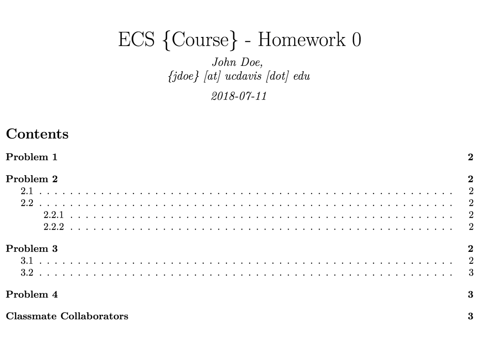
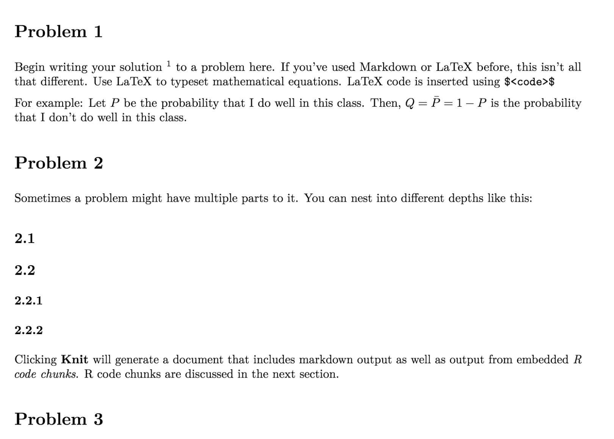

This tutorial is intended for students in ECS 132: Probability and Statistical Modeling for CS, offered by the department of Computer Science at UC Davis. After this tutorial, you will learn:
RMarkdown is and why do we care?RMarkdownLaTeX code within your R Markdown fileSimply put, R Markdown is a file format to help you create dynamic documents, but with R. It uses simple Markdown and embeddable code chunks written in R. It also allows you to use LaTeX to typeset mathematical equations. Overall, R Markdown produces beautiful documents and academic reports.
We will be using R Markdown to write up homework solutions. Since R Markdown requires some prior knowledge or familiarity with Markdown and LaTeX, please make sure you check out how to write in Markdown syntax, and basic typesetting using LaTeX syntax.
R-Studio and R MarkdownR Markdown is an R Studio plugin/extension. Be sure to download R Studio here
Follow steps to finish setting up your R Studio IDE.
Once you have set up the IDE, type the following on your R Studio console that you should see on your screen (or on the bottom of your IDE if you have a file open).
Console in R Studio
R Markdown.TeX EnginesSince students are expected to submit PDF files, R Markdown requires a TeX engine installed. If you are using Windows, please make sure you have MiKTeX installed. Alternatively, if you are using a Mac, make sure to install MacTeX.
R Markdown (.Rmd) FileTo create a new .Rmd file in R Studio, select File >> New File >> R Markdown.
Fill in the Title and Author for your .Rmd file.
Select the file type. Since you’re using R Markdown to submit homework, select PDF
By doing this, a minimal R Markdown file will be created for you. Here is how it should look.
Default RMD File Generated by R Studio
If you want to see the PDF the document yields, click on the Knit button.
Congratulations! You’ve knitted your first .Rmd file to create a minimal PDF file.
YAML HeaderThe first few lines in your .Rmd file that you see encapsulated within the --- lines, is known as the YAML Header. This defines the required headers for your .Rmd file. For our homework assignments, shall use the following header:
Replace the default YAML header with the following:
---
title: "ECS {Course} - Homework 0"
author: John Doe, \break \{jdoe\} [at] ucdavis [dot] edu # Name and Email
date: "`r Sys.Date()`"
output:
pdf_document:
toc: yes
toc_depth: 3
---This should be self explanatory. We just define a title for our homework, the author, the date (whenever you knit), and define a default Table of Contents. There might be some pieces inside the author section that look strange to you. This is because, we can only define new lines and paranthesis using LaTeX syntax.
.Rmd File for HomeworkTo make things easier, we have provided you with a template for writing homework. Please follow the template to write your homework. You can find the file in Canvas or here.
Simply replace the existing contents with the above mentioned .Rmd contents from the template file.
Knit the file to a PDF and confirm that everything is fine. You should now have a template homework PDF.
You should see something like this:
 
LaTeXOften times you want to write out mathematical equations or proofs. If you want to add typset mathematical equations inline do so by typing LaTeX code in between two $ symbols
$ <Latex code> $For example: The following LaTeX code
Let $P$ be the probability that I milk a cow. Then $Q = 1 - P$ is the probability that I don't milk a cow.yields the following:
Let \(P\) be the probability that I milk a cow. Then \(Q = 1 - P\) is the probability that I don’t milk a cow.
LaTeXIf you want to write mathematical equations that span more than just a single line, you can do so like this:
$$
<Multi Line Latex Code Here>
$$For Example: The following LaTeX code
Let $P(A) = 0.5$, $P(B) = 0.2$, $P(A \cap B) = 0.3$.
Then
$$
\begin{split}
P(A \cup B) &= P(A) + P(B) - P(A \cap B) \\
&= 0.5 + 0.2 - 0.3 \\
&= 0.4
\end{split}
]
$$yields the following:
Let \(P(A) = 0.5\), \(P(B) = 0.2\), \(P(A \cap B) = 0.3\).
Then \[ \begin{split} P(A \cup B) &= P(A) + P(B) - P(A \cap B) \\ &= 0.5 + 0.2 - 0.3 \\ &= 0.4 \end{split} \]
Now, try to create your own multi-line LaTeX equation and embed it in your .Rmd file.
Often times, you will be asked to write some sort of R code in your homework. You want to embed your R code in your .Rmd file. Any R code that is to be writted and embedded in your .Rmd file, should be enclosed within three grave accents that look like this: ` ` `
Here is an example of a code chunk:
{r someOptionalChunkName, eval=TRUE} n <- rnorm(10)
When you write a code chunk like this, R Markdown, by default, compiles the code, executes it, and writes the output to the file. If you want to suppress the output, then you can write a code chunk like this:
{r someOtherChunkName, resuls='hide'} n <- rnorm(10)
If you do not wish to execute the code and just print out the code chunk, then you can write a code chunk like this:
{r iCantThinkAnymore, eval=FALSE} n <- rnorm(10)
Note: Refer to Homework_Template.Rmd located in Canvas for a better understanding.
Hopefully this simple tutorial should have gotten you started with getting your homework template .Rmd file to knit to a PDF. If you did, congrats! You can start working on the homework now :)
If you have any questions, please post your questions to our Piazza forum.